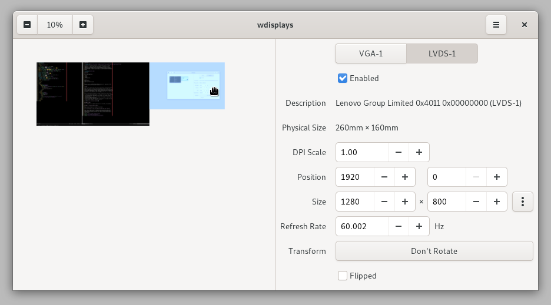

Use wdisplays to arrange your monitors how you like them. Adjust your screen size and positioning visually, or enter in precise values. Use the live screen preview to align your screen to its content. Makes configuring multi-monitor setups a breeze.
Works with popular wlroots compositors like Sway and Wayfire.
